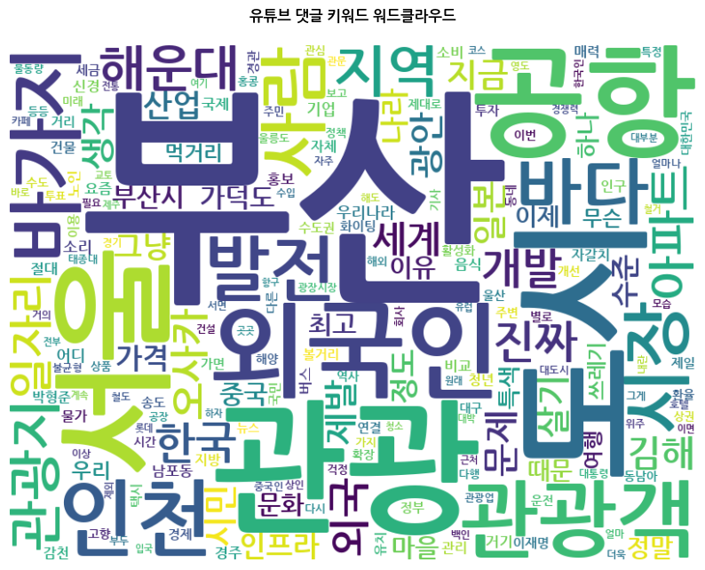

WAVE TO THE FUTURE
부산, 외국인 소비 1조 원 시대를 열다
부산이 사상 최초로 연 외국인 관광객 300만 명을 돌파하며 인천을 제치고 전국 2위에 등극했습니다. 전통시장의 미식 코스가 새로운 K-컬처 아이콘으로 부활한 반면, 일부 도심에만 편중된 쏠림 현상과 열악한 입국 인프라라는 그늘이 여전히 숙제로 남았습니다. 시민들의 생생한 757건의 진짜 목소리와 데이터를 균형 있게 조명합니다.
전년비 32.4% 성장
인천공항 유입세를 누르고 이룩한 독자 성과
해운대 2개동 및 서면 1개동 과집중 현상
뉴스 시청자들이 개진한 핵심 피드백 분석
외국인 관광 소비 편중 현황
상위 3개 행정동이 과반 지출 점유
유튜브 댓글 키워드/테마 빈도
시민들이 지적한 757건 중 핵심 테마별 출현율 분석

이미지를 불러올 수 없습니다 (pusan.png)
폴더에 'pusan.png' 파일이 올바르게 존재하는지 확인해 주세요.
부산 관광 정책 믹스 시뮬레이터
여러 개의 정책을 중복 선택하거나, 간편 추천 조합 버튼을 클릭해 실시간 시너지 효과를 분석해 보세요.
활성화된 정책이 없습니다. 왼쪽 정책 체크리스트에서 구체적인 개혁 방안들을 선택해 결합 시너지를 분석해 보세요.
실시간 여론 및 댓글 탐색기
키워드 검색 및 주제 필터를 통해 현장의 소리를 탐색합니다.
- ✦ 외국인 지출 1조 시대 돌파: 인천을 추월하며 전국 2위에 등극한 핵심 전초지 위상 성립.
- ✦ 로컬 전통시장의 재발견: SNS 바이럴 홍보를 타고 글로벌 개별 여행객들의 신흥 맛집 코스로 안착.
- ✦ 로컬 고유 미식의 글로벌화: 돼지국밥 등이 이색적인 미식 경험으로 확고한 고유 콘텐츠 위상 수립.
- ✦ 바가지 사행행위 우려: 제주도 등의 바가지 폭리 사례를 경고하며 철저한 정찰제 및 시장 단속 주문.
- ✦ 국제공항 인프라 부족: 외국인들을 맞이하기 위한 김해공항 위생, 규모 및 통역 시설 미비에 대한 강한 지적.
- ✦ 결제 및 온라인 예매 폐쇄성: 외국인들의 철도, 버스 예매 접근을 원천 차단하는 인증 장벽 완화 시급.